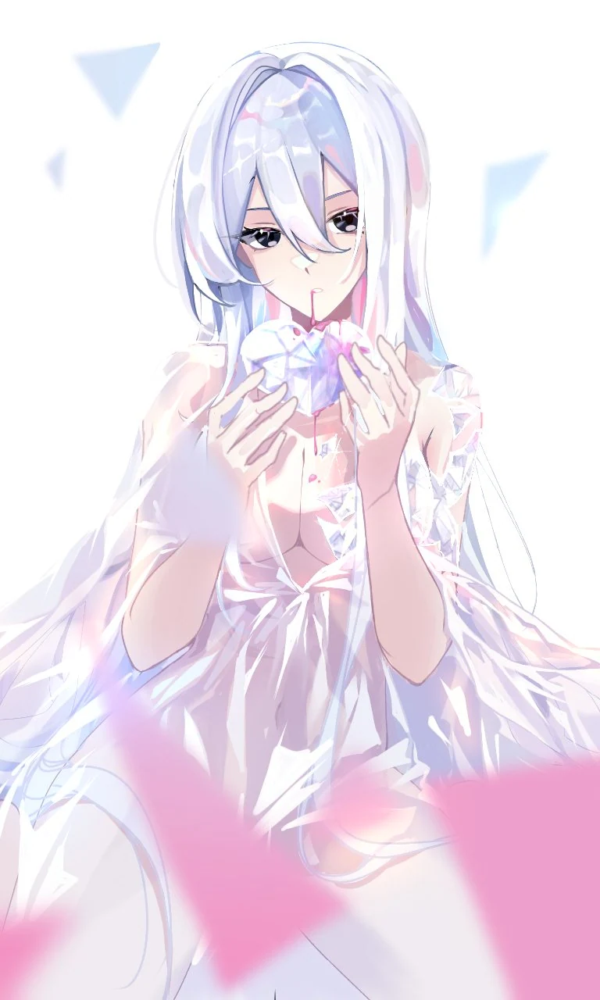
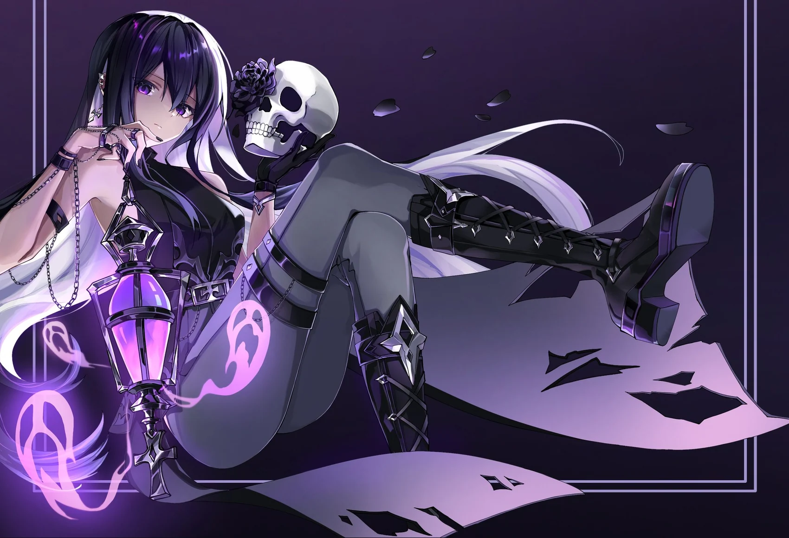
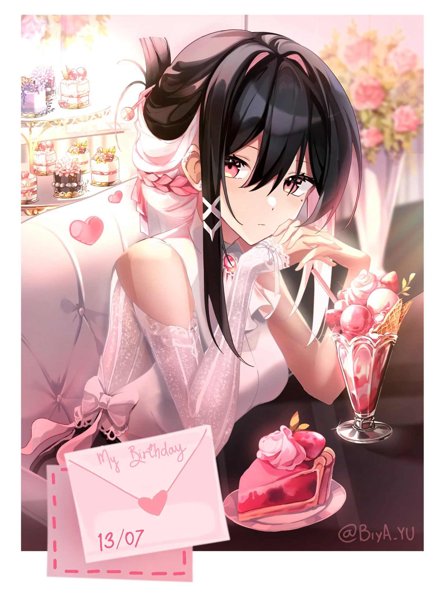
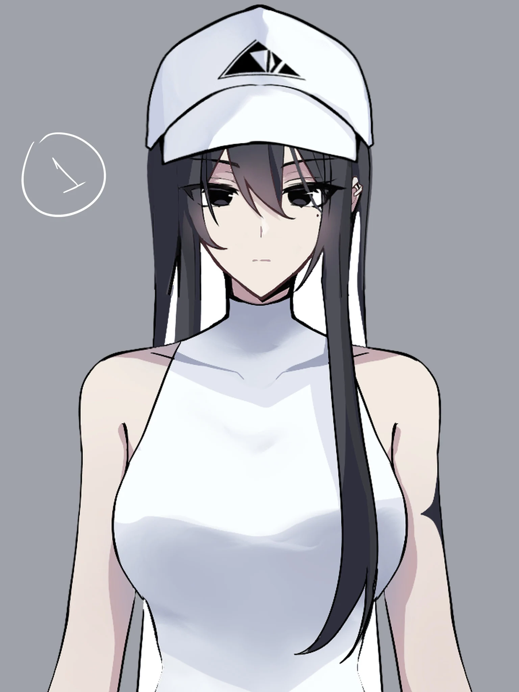

ONDE A LUZ VIRA ARTE
BIYA .
Arte entre luz
e
cristal.
Explore a expressão visual, os personagens e as criações de Biya.


ARTE
ESTÚDIO
Fragmentos
da
imaginação.
Uma seleção visual de obras, personagens e estudos criativos. Toque nas setas para explorar.
↙
ILUSTRAÇÃO / OC
Doce Devaneio
Cena delicada com rosas, doces e a identidade visual da personagem.
Arte em muitas formas.
Um olhar em cada detalhe.
NO AR. ↗
Além do desenho, existem as transmissões, jogos e encontros. Registros da Biya em movimento.

VISUAL DA PERSONAGEM · ROUPA ALTERNATIVAQuem está por trás das artes
OI, EU SOU
BIYA.
Biya é artista digital, criadora de personagens e VTuber. Conheça suas ilustrações, seus projetos e seus canais.